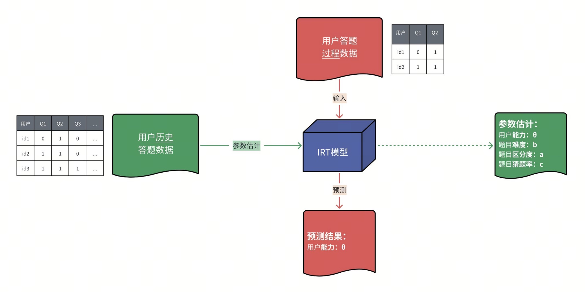
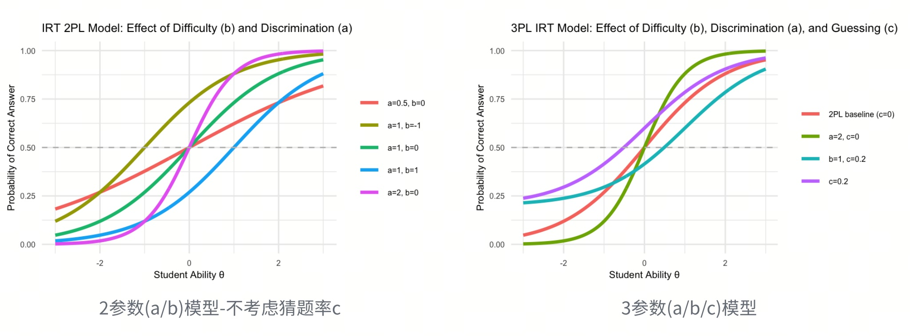
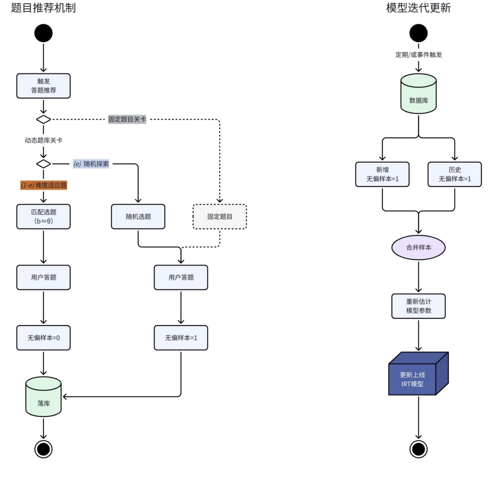
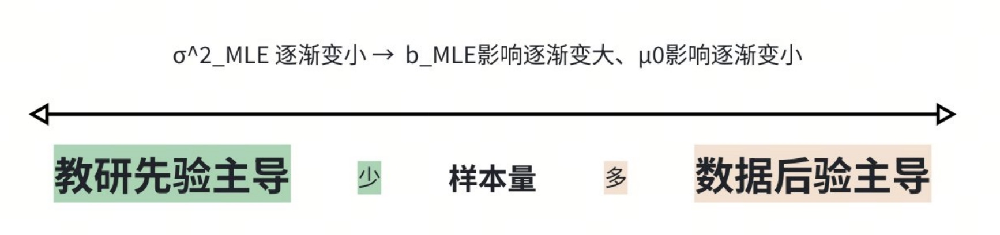
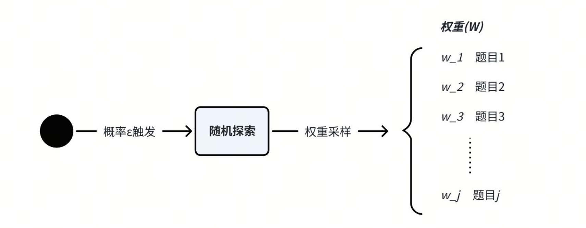

基于IRT的习题推荐系统构思
背景
简单讲，就是我们要把“⽤⼾能⼒”与“题⽬难度”建⽴在同⼀把标尺下，从⽽实现“人题自动匹配”的系统。
- 例如：能⼒为 0.7 的⽤⼾ → 推荐难度为 0.7 的题⽬；
- 能⼒和难度不是简单的分为“⾼、中、低”，⽽是相同数轴下可⽐较的“连续值”。
解决什么问题？
- 优化用户体验：调节用户做题难度（实现千人千题）
- 评估教学效果：使教学效果量化可比
- 优化题库：为题目建立优化指标（难度/区分度）
简单介绍一下IRT模型
IRT（Item ResponseTheory，项目反应理论）是一种在心理测量与教育评估领域广泛使用的概率模型，用于刻画用户作答结果与其潜在能力之间的关系。
核心思想是：用户是否答对一道题，既取决于题目的难度，也取决于用户的能力；模型能够同时对两者进行估计。
结合我们的业务场景，可利用历史作答样本离线训练模型，对新作答用户在线预测。

训练模型可以得到以下关键参数：
- 用户潜在能力（θ）：个体未直接观测到的能力指标，例如数学能力、理解能力
- 题目参数（a/b/c）：
- 难度（b）：题目所要求的能力阈值，θ=b时答对概率为50%
- 区分度（a）：题目对能力差异的敏感程度，a越大，题目越能区分高、低能力个体
- 猜题率（c）：能力极低的用户仍能答对该题的概率（主要用于选择题场景）
基于3PL模型，某个体答对某题目的概率可表示为：
$$ P(\text{答对}\mid\theta)=c+(1-c)\frac{1}{1+e^{-a(\theta-b)}} $$

补充解释： 难度(b)与区分度(a)的区别？ 难度指的是题目有多难（谁能做对），区分度指的是题目有多会“分人”（强弱差异有多明显）。
| 题目 | 低能力正确率 | 高能力正确率 | 结论 |
|---|---|---|---|
| 2 + 3 = ? | 95% | 99% | 难度低，区分度低 |
| 12 × 17 = ? | 30% | 80% | 难度中等，区分度高 |
| 微积分证明题 | 2% | 10% | 难度高，区分度低 |
注意模型局限性：
由于IRT模型有局限性和风险，所以不能“拿来就用”，需要通过系统设计来规避
- 基于局部独立假设：题目作答相互独立，作答顺序不影响正确率；
- 需要大样本稳定估计：新题无足够作答样本，导致参数估计不稳定；
- 选择带来的样本偏差：对不同能力用户有选择性的推题，会导致样本选择偏差，不能直接用来训练迭代模型；
- θ不是绝对能力：是相对尺度，与题库绑定，不同题库的θ不可直接比较。
通过系统设计规避
如何解决样本有偏?
- 当系统持续根据难度b≈能力θ推荐题目，就会产生有偏样本，为了使模型可迭代，就需要定期无偏采样；
- 因此设计“随机探索”机制，有概率$e$会进行随机选题，以此生产无偏样本。

如何解决新题参数估计？
问题1：新题上线缺乏作答数据，不能稳定估计难度(b)，因此对参数b做渐进式估计(先验初始化 → 探索采样 → 贝叶斯更新 → 参数收敛) 。
-
新题上线时，由教研配置参数或系统默认初值，作为贝叶斯先验；
（考虑到课程制作老师不具有建模经验，所以配置时要提供直觉标签，比如：简单、中等、困难，以此映射b先验分布）
$$ b \sim N(\mu_0, \sigma_0^2) $$ -
随样本量积累，对参数进行贝叶斯更新（先验主导 → 逐渐数据主导 → 参数自然收敛）；
Step1.将新题与旧题样本一起训练模型，得到新题MLE 难度估计$b_\text{MLE}$
Step2.结合先验，做贝叶斯 MAP 更新：
$$
b_{\text{MAP}} = \frac{\sigma_0^2}{\sigma_{\text{MLE}}^2 + \sigma_0^2} b_{\text{MLE}} + \frac{\sigma_{\text{MLE}}^2}{\sigma_{\text{MLE}}^2 + \sigma_0^2} \mu_0
$$

问题2：新题需要更快的采样，因此要概率倾斜（高权重 → 逐渐降低 → 趋于稳定）。
$$
W_j = \frac{1}{1+\alpha \log(1 + n_j)}
$$
